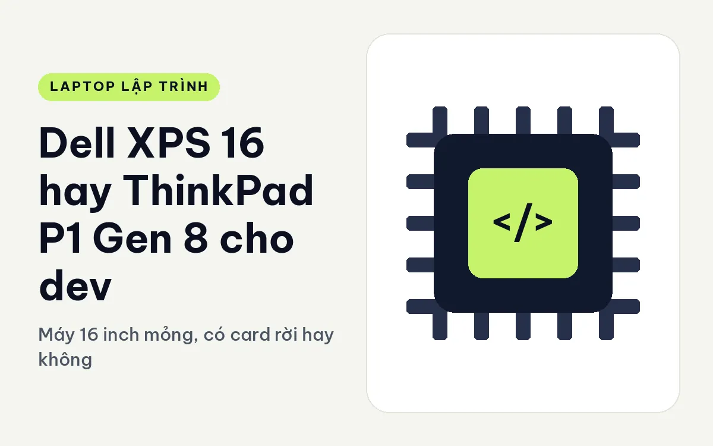
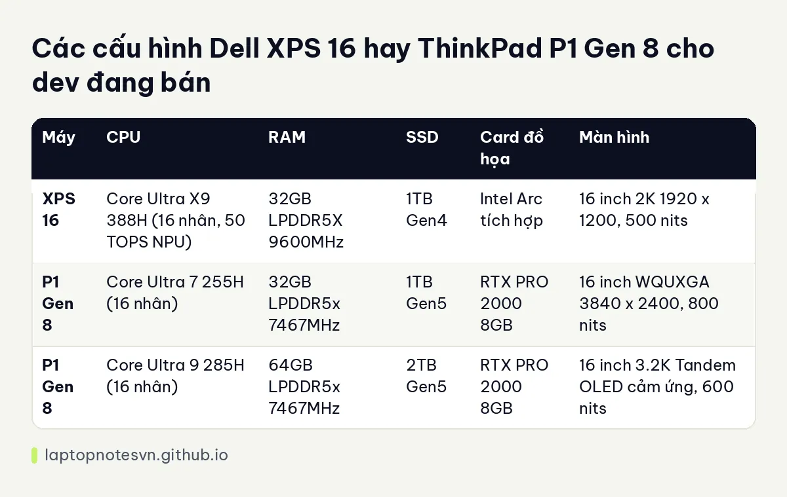

Dell XPS 16 hay ThinkPad P1 Gen 8 cho dev - Máy 16 inch mỏng, có card rời hay không

Hai máy 16 inch mỏng này có hình thức na ná nhau, nhưng bên trong đi hai hướng khác hẳn. XPS 16 là máy sáng tạo nội dung gọn nhẹ, đồ họa tích hợp. P1 Gen 8 là máy trạm mỏng, có card RTX PRO. Dev nào đang cân nhắc cả hai thường chưa nghĩ ra mình có cần GPU rời hay không, và đó mới là câu hỏi cần trả lời đầu tiên.
Một bên là Dell XPS 16 DA16260.
Bên kia là ThinkPad P1 Gen 8.
Dell XPS 16 và ThinkPad P1 Gen 8 khác nhau ở vỏ máy
XPS 16 dày 14,6 mm, nặng dưới 1,7 kg, pin 70Wh. P1 Gen 8 nặng 1,84 kg, kích thước 354,3 x 241 mm, dày tối đa 20,6 mm. Vậy XPS 16 mỏng hơn khoảng 6 mm và nhẹ hơn ít nhất 140 gam, đủ để thấy khác biệt khi bỏ vào ba lô.
Cổng của P1 phong phú hơn: 1 USB-A, 1 Thunderbolt 4, 2 Thunderbolt 5 và HDMI 2.1. Dữ liệu XPS 16 không liệt kê chi tiết cổng, vì vậy bài này không so sánh số lượng cổng của máy Dell. Nếu cổng là điều quan trọng, bạn nên xem trực tiếp thông số trên trang sản phẩm.
Điểm khác biệt lớn nhất là RAM. XPS 16 dùng RAM hàn trên bo mạch, không nâng cấp được. P1 Gen 8 dùng LPCAMM2 tối đa 64GB, có thể thay. Với người chạy Docker nhiều và muốn dùng máy lâu, RAM thay được là lợi thế thực sự.
CPU, RAM và SSD của từng bản
| Máy | CPU | RAM | SSD | Card đồ họa | Màn hình |
|---|---|---|---|---|---|
| XPS 16 | Core Ultra X9 388H (16 nhân, 50 TOPS NPU) | 32GB LPDDR5X 9600MHz | 1TB Gen4 | Intel Arc tích hợp | 16 inch 2K 1920 x 1200, 500 nits |
| P1 Gen 8 | Core Ultra 7 255H (16 nhân) | 32GB LPDDR5x 7467MHz | 1TB Gen5 | RTX PRO 2000 8GB | 16 inch WQUXGA 3840 x 2400, 800 nits |
| P1 Gen 8 | Core Ultra 9 285H (16 nhân) | 64GB LPDDR5x 7467MHz | 2TB Gen5 | RTX PRO 2000 8GB | 16 inch 3.2K Tandem OLED cảm ứng, 600 nits |
XPS 16 hiện chỉ có một cấu hình, nên lựa chọn đơn giản: bạn mua đúng bản này hoặc không mua. Mô tả ghi rõ máy không có card rời, chip X9 388H dùng đồ họa tích hợp Arc. Với phần lớn việc code như web, mobile, backend, đồ họa tích hợp là đủ. Nhưng nếu cần CUDA, dựng mô hình hay thử suy luận GPU thì bạn phải chọn P1.

Hai bản P1 đều dùng RTX PRO 2000 8GB, khác nhau ở CPU, RAM và màn. Bản Ultra 9 285H có 64GB RAM, hợp ai thường chạy nhiều máy ảo. Bạn có thể đọc thêm cách tính dung lượng ở bài lập trình viên cần bao nhiêu RAM.
Chia theo kiểu việc lập trình
- Web, mobile, backend, DevOps: XPS 16 đủ dùng và gọn hơn.
- Cần CUDA, thử nghiệm mô hình AI: P1 với RTX PRO 2000 là lựa chọn duy nhất của hai máy.
- Dev cần nâng RAM sau này: P1, vì LPCAMM2 thay được.
- Dev ít chạy Docker, chỉ cần màn đẹp để đọc code: XPS 16 với màn 16 inch cho khung nhìn rộng.
Màn hình và những gì thực sự khác biệt khi dùng hằng ngày
Màn XPS 16 là IPS 2K độ phân giải 1920 x 1200, tần số quét thay đổi 1 đến 120Hz, phủ 100% sRGB, hỗ trợ Dolby Vision và sáng 500 nits. Độ phân giải này vừa phải, chữ không quá nhỏ, và tần số quét linh hoạt giúp tiết kiệm pin khi bạn đọc tài liệu. Màn P1 hai bản đều có độ phân giải cao hơn, 3840 x 2400 hoặc 3000 x 2000, mịn hơn nhưng tốn điện hơn.
Một điểm đáng ghi nhận là NPU. XPS 16 với Core Ultra X9 388H có NPU 50 TOPS, trong khi hai bản P1 ghi NPU 13 TOPS. Nếu bạn dùng các công cụ AI chạy trên NPU, XPS 16 có lợi thế ở mảng này. Nhưng với đa số dev, NPU chưa phải tiêu chí quyết định vì nhiều công cụ vẫn chạy trên CPU hoặc GPU.
Tốc độ RAM cũng khác: XPS 16 dùng LPDDR5X 9600MHz, nhanh hơn 7467MHz của P1. Đổi lại, RAM của XPS bị hàn, không nâng cấp, còn RAM P1 thay được. Nói cách khác, XPS 16 hợp với người mua một lần và dùng nguyên cấu hình, còn P1 hợp với người muốn tinh chỉnh máy theo thời gian. Hai kiểu thiết kế này phản ánh hai triết lý: một bên tối ưu tốc độ và độ mỏng, một bên tối ưu khả năng sửa chữa và mở rộng.
Chọn Dell XPS 16 hay ThinkPad P1 Gen 8
Chọn XPS 16 nếu bạn ưu tiên mỏng nhẹ, không cần GPU rời, thích máy đẹp và 32GB RAM đã đủ vì dù sao không nâng được. Bài XPS 16 cho lập trình nói kỹ hơn.
Chọn P1 Gen 8 nếu bạn có việc cần card RTX PRO, muốn 64GB RAM và khả năng nâng cấp. Chấp nhận nặng hơn một chút để đổi lấy sức mạnh.
Một câu hỏi tự kiểm: nếu bạn bỏ card rời đi, công việc nào của bạn bị chậm hẳn? Nếu không nghĩ ra việc nào, XPS 16 đủ. Nếu nghĩ ra, P1.
Đăng ngày 09/11/2026